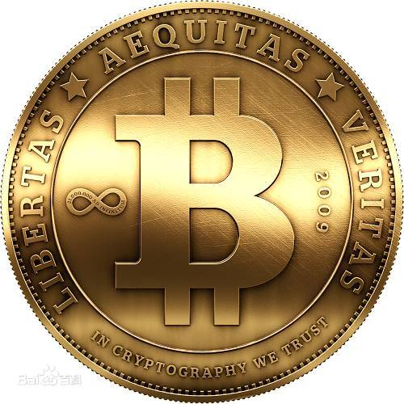
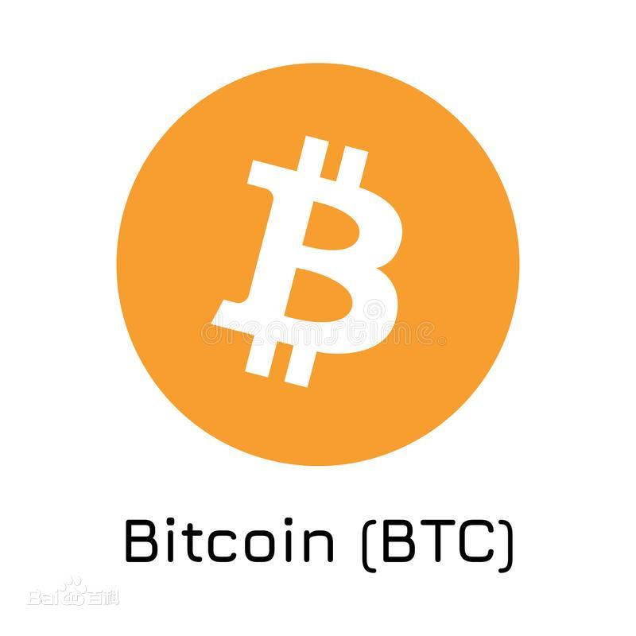
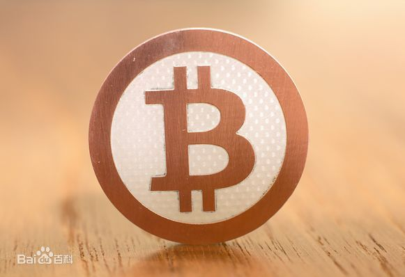

比特币
1.比特币的产生
2008年爆发全球金融危机，同年11月1日，一个自称中本聪（Satoshi Nakamoto）的人在P2P foundation网站上发布了比特币白皮书《比特币：一种点对点的电子现金系统》,陈述了他对电子货币的新设想——比特币就此面世。2009年1月3日，比特币创世区块诞生。
和法定货币相比，比特币没有一个集中的发行方，而是由网络节点的计算生成，谁都有可能参与制造比特币，而且可以全世界流通，可以在任意一台接入互联网的电脑上买卖，不管身处何方，任何人都可以挖掘、购买、出售或收取比特币，并且在交易过程中外人无法辨认用户身份信息。2009年1月5日，不受央行和任何金融机构控制的比特币诞生。比特币是一种数字货币，由计算机生成的一串串复杂代码组成，新比特币通过预设的程序制造。
2.比特币的产生原理
比特币是由系统自动生成一定数量的比特币作为矿工奖励来完成发行过程的。矿工在这里充当了货币发行方的角色，他们获得比特币的过程又称为“挖矿“。所有的比特币交易都需要通过矿工挖矿并记录在这个账本中。矿工挖矿实际上就是通过一系列算法，计算出符合要求的哈希值，从而争取到记账权。这个过程实际上就是试错的过程，一台计算机每秒产生的随机哈希碰撞次数越多，先计算出正确哈希值的概率就越大。最先计算出正确数值的矿工可以将比特币交易打包成一个区块，然后记录在整个区块链上，从而获得相应的比特币奖励。这就是比特币的发行过程，同时它也激励着矿工维护区块链的安全性和不可篡改性。
设计者在设计比特币之初就将其总量设定为2100万枚。最开始每个争取到记账权的矿工都可以获得50枚比特币作为奖励，之后每4年减半一次。预计到2140年，比特币将无法再继续细分，从而完成所有货币的发行，之后不再增加。
比特币网络通过“挖矿”来生成新的比特币。所谓“挖矿”实质上是用计算机解决一项复杂的数学问题，来保证比特币网络分布式记账系统的一致性。比特币网络会自动调整数学问题的难度，让整个网络约每10分钟得到一个合格答案。随后比特币网络会新生成一定量的比特币作为区块奖励，奖励获得答案的人。
3.比特币的交易方式
（1）购买方法：用户可以买到比特币，同时还可以使用计算机依照算法进行大量的运算来“开采”比特币。在用户“开采”比特币时，需要用电脑搜寻64位的数字就行，然后通过反复解谜密与其他淘金者相互竞争，为比特币网络提供所需的数字，如果用户的电脑成功地创造出一组数字，那么就将会获得25个比特币。
由于比特币系统采用了分散化编程，所以在每10分钟内只能获得25个比特币，而到2140年，流通的比特币上限将会达到2100万。换句话说，比特币系统是能够实现自给自足的，通过编码来抵御通胀，并防止他人对这些代码进行破坏。
（2）交易方式：比特币是类似电子邮件的电子现金，交易双方需要类似电子邮箱的“比特币钱包”和类似电邮地址的“比特币地址”。和收发电子邮件一样，汇款方通过电脑或智能手机，按收款方地址将比特币直接付给对方。下列表格，列出了免费下载比特币钱包和地址的部分网站。
比特币地址是大约33位长的、由字母和数字构成的一串字符，总是由1或者3开头，例如火币"1PCgrJSzxJTjtUUbijcvPjZ6FVS2jGeZnN"。比特币软件可以自动生成地址，生成地址时也不需要联网交换信息，可以离线进行。可用的比特币地址非常多。
比特币地址和私钥是成对出现的，他们的关系就像银行卡号和密码。比特币地址就像银行卡号一样用来记录你在该地址上存有多少比特币。你可以随意的生成比特币地址来存放比特币。每个比特币地址在生成时，都会有一个相对应的该地址的私钥被生成出来。这个私钥可以证明你对该地址上的比特币具有所有权。我们可以简单的把比特币地址理解成为银行卡号，该地址的私钥理解成为所对应银行卡号的密码。只有你在知道银行密码的情况下才能使用银行卡号上的钱。所以，在使用比特币钱包时请保存好你的地址和私钥。
比特币的交易数据被打包到一个“数据块”或“区块”（block）中后，交易就算初步确认了。当区块链接到前一个区块之后，交易会得到进一步的确认。在连续得到6个区块确认之后，这笔交易基本上就不可逆转地得到确认了。比特币对等网络将所有的交易历史都储存在“区块链”（blockchain）中。区块链在持续延长，而且新区块一旦加入到区块链中，就不会再被移走。区块链实际上是一群分散的用户端节点，并由所有参与者组成的分布式数据库，是对所有比特币交易历史的记录 。 中本聪预计，当数据量增大之后，用户端希望这些数据并不全部储存自己的节点中。为了实现这一目标，他采用引入散列函数机制。这样用户端将能够自动剔除掉那些自己永远用不到的部分，比方说极为早期的一些比特币交易记录。
(3)消费方式：许多面向科技玩家的网站，已经开始接受比特币交易。比如火币、币安、OKEx之类的网站，以及淘宝某些商店，甚至能接受比特币兑换美元、欧元等服务。毫无疑问，比特币已经成为真正的流通货币，而非腾讯Q币那样的虚拟货币。国外已经有专门的比特币第三方支付公司，类似国内的支付宝，可以提供API接口服务。
可以用钱来买比特币，也可以当采矿者，“开采”它们用电脑搜寻64位的数字就行。通过用电脑反复解密，与其他的淘金者竞争，为比特币网络提供所需的数字。如果电脑能够成功地创造出一组数字，就会获得12.5个比特币。比特币是分散化的，需要在每个单位计算时间内创造固定数量比特币是每10分钟内可获得12.5个比特币。到2140年，流通的比特币上限将达到2100万个。换句话说，比特币体制是可以自给自足的，译成编码可抵御通胀，防止他人搞破坏。
4.比特币的货币特征
(1)去中心化：比特币是第一种分布式的虚拟货币，整个网络由用户构成，没有中央银行。去中心化是比特币安全与自由的保证 。
(2)全世界流通：比特币可以在任意一台接入互联网的电脑上管理。不管身处何方，任何人都可以挖掘、购买、出售或收取比特币。
(3)专属所有权：操控比特币需要私钥，它可以被隔离保存在任何存储介质。除了用户自己之外无人可以获取。
(4)低交易费用：可以免费汇出比特币，但最终对每笔交易将收取约1比特分的交易费以确保交易更快执行。
(5)无隐藏成本：作为由A到B的支付手段，比特币没有繁琐的额度与手续限制。知道对方比特币地址就可以进行支付。
(6)跨平台挖掘：用户可以在众多平台上发掘不同硬件的计算能力。
5.比特币的危害风险
在没有任何政策干预的情况下，中国比特币区块链的年能耗将在2024年达到峰值296.59太瓦时，产生1.305亿公吨碳排放。比特币的高耗能特性已经引起世界各国的注意。在计算的过程中，比特币全网会消耗大量的电力能源和算力。